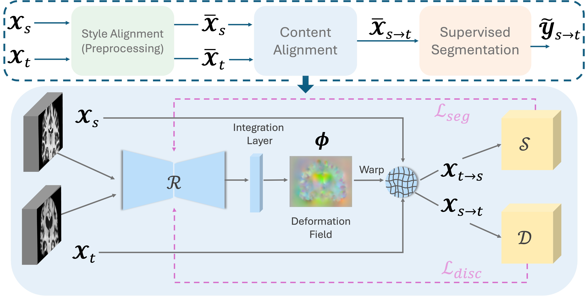

ICCV Workshop 2025
Unsupervised Domain Adaptation via Content Alignment for Hippocampus Segmentation
ICCV Workshop on Computer Vision for Automated Medical Diagnosis, 2025

Overview of the proposed framework combining style alignment, deformable registration, and downstream segmentation.
Abstract
Deep learning models for medical image segmentation often struggle to generalise across datasets due to domain shifts. These shifts arise from differences in image appearance (style) and population-dependent anatomical characteristics (content).
We propose an unsupervised domain adaptation framework for hippocampus segmentation that explicitly addresses both types of domain shift.
Our approach combines intensity normalisation for style harmonisation with a bidirectional deformable image registration framework for content alignment. Registration, segmentation and discriminator networks are jointly trained to generate anatomically plausible transformations that account for differences between source and target populations.
We evaluate our framework on synthetic Morpho-MNIST data and three hippocampus MRI datasets representing populations with varying degrees of atrophy. Our method consistently improves cross-domain segmentation performance, with particularly strong gains when transferring from young healthy populations to clinical dementia patients.
Motivation
Accurate hippocampus segmentation is important for studying and monitoring neurodegenerative conditions such as dementia. However, segmentation models trained on one population often perform poorly when applied to another.
Existing domain adaptation methods primarily address differences in image appearance caused by scanners and acquisition protocols. Yet differences in age, disease status, and anatomical structure introduce additional challenges.
In particular, hippocampal atrophy produces morphological differences between healthy and dementia populations that cannot be resolved through appearance harmonisation alone.
Hippocampal volume distributions across young healthy, dementia research, and clinical dementia populations.
Proposed Method
Our framework separates the domain adaptation problem into style alignment and content alignment, followed by downstream supervised segmentation.
01
Style Alignment
MRI preprocessing, including intensity normalisation and histogram standardisation, reduces appearance differences between datasets.
02
Content Alignment
Bidirectional deformable image registration learns anatomical transformations between source and target populations, guided by segmentation and adversarial feedback.
03
Downstream Segmentation
Transformed source images and their corresponding labels are used to train a segmentation model for the target domain.
Overview of the proposed framework, combining style harmonisation, bidirectional deformable registration, segmentation-guided alignment, and adversarial learning.
Experimental Setup
We evaluate our approach using both synthetic data and real brain MRI datasets.
Morpho-MNIST
Thick and thin digit variants provide a controlled setting for investigating content shifts. Additional appearance variations simulate style differences between domains.
Hippocampus MRI
We consider three datasets representing increasingly challenging population differences:
- DRYAD: Young, healthy participants.
- HarP: A dementia research cohort containing healthy controls, mild cognitive impairment, and Alzheimer's disease cases.
- OBHC: A clinical dementia population from the Oxford Brain Health Clinic.
Quantitative Results
Our framework improves downstream segmentation accuracy across all three domain adaptation scenarios.
Dice Score (Ours)
Dice Score (Ours)
Dice Score (Ours)
In the most challenging clinical scenario (DRYAD → OBHC), our method improves the Dice score from 0.550 without adaptation to 0.680, outperforming the best standard augmentation baseline of 0.592.
Comparison of downstream segmentation performance across domain adaptation strategies.
Qualitative Results
The proposed framework generates spatial transformations that account for anatomical differences between source and target populations.
The learned deformations concentrate around hippocampal structures, reflecting the region-specific guidance introduced through joint segmentation training.
Examples of source-to-target content alignment and the corresponding deformation fields.
Segmentation predictions also demonstrate improved delineation of hippocampal structures compared with standard augmentation strategies.
Qualitative comparison of hippocampus segmentation predictions on HarP and OBHC target images.
Conclusion
We introduce an image-space unsupervised domain adaptation framework that explicitly addresses anatomical content shifts alongside differences in MRI appearance.
By combining efficient style harmonisation with jointly trained deformable registration, segmentation and discriminator networks, our approach improves cross-population hippocampus segmentation, particularly in clinically challenging settings characterised by substantial atrophy.
Citation
If you find this work useful, please cite our paper:
@inproceedings{kalabizadeh2025content,
title={Unsupervised Domain Adaptation via
Content Alignment for Hippocampus
Segmentation},
author={Kalabizadeh, Hoda and
Griffanti, Ludovica and
Yeung, Pak-Hei and
Namburete, Ana I. L. and
Dinsdale, Nicola K. and
Kamnitsas, Konstantinos},
booktitle={Proceedings of the
IEEE/CVF International Conference
on Computer Vision Workshops},
year={2025}
}